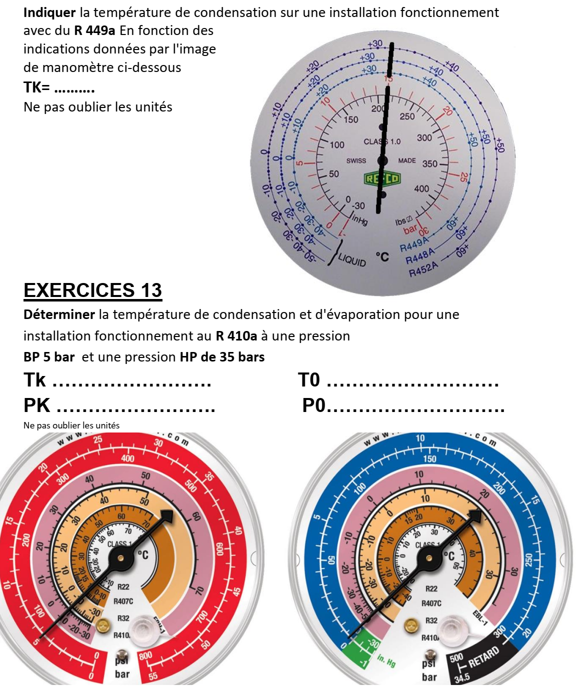
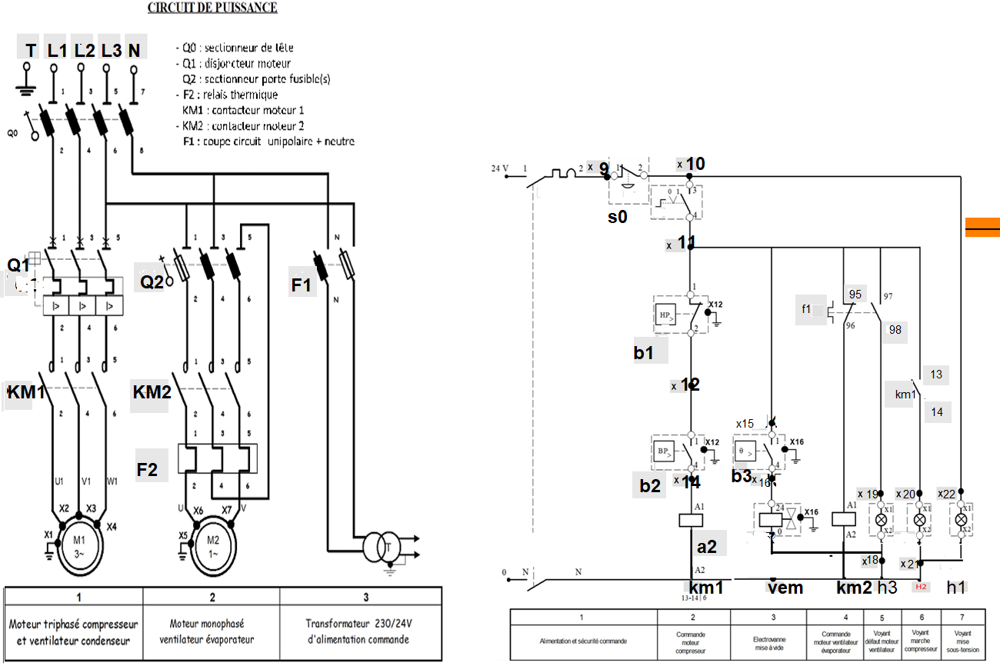

LPP
JACQUES RAYNAUD

| NiveauCAP IFCA 2A |
Thème / DomaineMise en service — chaîne de sécurité (chantier A3) |
Séance n° 2/3Pressostats et régulation — la machine s'arrête toute seule |
SéquenceS12 · sem. 9, 10-14/11/2026 |
| Nom________________ |
Prénom________________ |
Date________________ |
Positionnement
01234
|
Mise en situation professionnelle
Votre entreprise poursuit le chantier de remise en état de l'atelier. Ordre d'intervention
n° S12-A3-02 : équiper votre machine de sa chaîne de sécurité (pressostats HP et BP), régler
les seuils de fonctionnement, puis remplir les feuilles de mise en service (module F4, rubriques 1-2).
Comme chez un client, votre chantier comporte des points d'arrêt contractuels : le chef de chantier
(le professeur) doit valider chaque jalon avant que vous ne passiez à la suite. Vous travaillez en
binôme, en autonomie guidée : aujourd'hui, aucun geste n'est démontré par le professeur — c'est
votre plan de travail qui vous conduit.
Objectifs — je serai capable de…
- expliquer pourquoi une machine frigorifique doit s'arrêter seule en cas de dérive de pression ;
- câbler les pressostats HP et BP dans le circuit de commande, sans shunter aucune sécurité ;
- régler un pressostat KP Danfoss selon la méthode en 5 étapes (pré-réglage haut puis descente progressive) ;
- relever une valeur de déclenchement réelle et la comparer à une valeur pré-réglée ;
- compléter les feuilles de mise en service F4 (rubriques 1-2) à partir de mes mesures.
Prérequis — je sais déjà…
- câbler un circuit de puissance et un circuit de commande (séance 1) ;
- consigner une installation selon la NFC 18-510 ;
- lire un manomètre BP (bleu) et HP (rouge) sur un manifold ;
- poser et déposer un manifold sans perte de fluide.
Si vous ne cochez pas tous ces prérequis, prévenez le professeur avant de commencer : un rappel court est possible pendant l'exercice au fil de l'eau.
Matériel
- Groupe de condensation didactique équipé d'un circuit de commande (× 1 par binôme)
- Pressostat combiné HP/BP ou 2 pressostats séparés type KP Danfoss (× 1 jeu)
- Manifold 4 voies avec manomètres HP (rouge) et BP (bleu) (× 1)
- Flexibles rouge (HP), bleu (BP), jaune (service) (× 1 jeu)
- Bouteille d'azote R avec détendeur (consommable) (× 1)
- Pompe à vide + vacuomètre (× 1 pour la mise en pression du manifold)
- Tournevis de réglage adapté au pressostat, sans forcer sur les curseurs (× 1)
- Multimètre pour contrôle de continuité du circuit de commande (× 1)
- Fils de câblage repérés (consommable) + petit outillage électrique (pince à dénuder, tournevis isolés)
- Cadenas et étiquette de consignation individuels (× 1 par élève)
- Feuilles de mise en service module F4, rubriques 1-2 (× 1 par binôme)
- Fiche plan de travail à jalons (ce document) + fiche de relevés
Consignes de sécurité
| Risque | Parade |
|---|
| Pressostat shunté (chaîne de sécurité inactive) | Interdiction formelle de shunter un pressostat, même pour tester. La chaîne doit rester active à tout moment de l'essai. |
| Électrisation sur le circuit de commande | Consignation NFC 18-510 avant tout câblage (couper, cadenasser, vérifier l'absence de tension) ; cadenas individuel retiré uniquement par le poseur. |
| Blessure aux mains (câblage, réglage du pressostat) | Gants de protection lors du câblage ; ne jamais forcer sur les curseurs ou les vis de réglage du pressostat. |
| Pression résiduelle au raccordement du manifold | Lunettes de sécurité, ouverture lente et progressive des vannes ; tarer les manomètres à zéro avant usage. |
🚨 En cas d'incident — couper l'alimentation (arrêt d'urgence), alerter immédiatement le professeur,
ne jamais retirer seul un cadenas de consignation qui n'est pas le vôtre. Trousse de secours et arrêt d'urgence
localisés en salle, poste indiqué par le professeur en début de séance.
❄ inerWeb Édu — par F. Henninot · LPP Jacques Raynaud — Campus EQUATIO
créé le 03/07/2026 · © F. Henninot 2026 — diffusion pédagogique autorisée, mention de l'origine requise
LPP
JACQUES RAYNAUD
S12 · séance 2/3 · CAP IFCA 2A — document élève
La notion du jour — la chaîne de sécurité
Observez ce que fait le professeur, puis répondez.
Observation — le professeur règle volontairement le pressostat HP à une
valeur basse, démarre la machine. Que se passe-t-il ?
Question — Qui a arrêté la machine ? Personne n'a appuyé sur un bouton.
Expliquez avec vos mots ce qui a pu se passer dans le circuit de commande.
Les pressostats HP et BP sont câblés dans le circuit de commande. Ce sont des
interrupteurs pilotés par la pression : si la pression sort de sa plage normale, le pressostat ouvre
le circuit et coupe le compresseur, sans intervention humaine. C'est la chaîne de sécurité. Une machine
frigorifique ne doit jamais forcer contre une pression anormale : elle doit s'arrêter seule.
Plan de travail à jalons
Vous travaillez en autonomie guidée. Cochez chaque étape réalisée. Le professeur
valide (vise) les deux jalons avant que vous ne passiez à la suite.
☐ Étape A — Consigner la machine (NFC 18-510)
☐ Étape B — Câbler le pressostat HP dans le circuit de commande, au schéma
☐ Étape C — Câbler le pressostat BP dans le circuit de commande, au schéma
☐ Étape D — Contrôler la continuité du circuit de commande au multimètre, hors tension
🔒 JALON 1 — Validation avant mise sous tension
Votre câblage est terminé et contrôlé. Vous appelez le professeur. Vous ne remettez pas sous tension
sans son visa.
Visa professeur : ________________ Heure : ________________
☐ Étape E — Poser le manifold, régler le pressostat BP (méthode signature, phase 6)
☐ Étape F — Vérifier qu'aucun pressostat n'est shunté (chaîne complète, active)
☐ Étape G — Réaliser l'essai prolongé (second cycle de la méthode signature)
🔒 JALON 2 — Vérification de la chaîne de sécurité complète
Avant l'essai prolongé, le professeur vérifie avec vous qu'aucun pressostat n'est shunté et que la
chaîne de sécurité est intégralement active. Interdiction formelle de shunter un pressostat.
Visa professeur : ________________ Heure : ________________
❄ inerWeb Édu — par F. Henninot · LPP Jacques Raynaud — Campus EQUATIO
créé le 03/07/2026 · © F. Henninot 2026 — diffusion pédagogique autorisée, mention de l'origine requise
LPP
JACQUES RAYNAUD
S12 · séance 2/3 · CAP IFCA 2A — document élève
Exercice au fil de l'eau (pendant le passage en tenue)
1. Lisez les pressions sur les cadrans de manomètre ci-dessous et complétez
les valeurs demandées, sans oublier les unités :

Exercices de lecture de manomètres — document CAP, F. Henninot.
Installation au R 449a : TK =
Installation au R 410a (BP 5 bar / HP 35 bar) :
Tk = T0 =
PK = P0 =
2. Sur le schéma de câblage ci-dessous, repérez et entourez le repère
b1 (pressostat HP) dans le circuit de commande. Entre quelles bornes est-il câblé ?

Schéma de câblage — document CAP, F. Henninot.
b1 câblé entre les bornes :
Étape 1 — Câblage des pressostats HP/BP (jalon 1)
Consignez la machine. En vous appuyant sur le schéma de câblage ci-dessus,
câblez le pressostat b1 (HP) puis le pressostat b2 (BP) dans le circuit de commande 24 V,
entre les bornes indiquées sur le schéma. Contrôlez la continuité au multimètre avant d'appeler le
professeur pour le jalon 1.
Notez ici les points de contrôle réalisés :
Étape E — Raccordement du manifold (avant le réglage du pressostat)
Après le visa du jalon 1, posez le manifold sur l'installation. Le schéma
fluidique ci-dessous montre le circuit frigorifique complet avec le manifold déjà raccordé et la pompe à
vide branchée sur la voie jaune (service).

Schéma fluidique — document CAP, F. Henninot.
Consigne de dessin — Trace, de manière schématique, sur le schéma
fluidique ci-dessus, l'endroit où tu raccordes le flexible BLEU (BP) et le flexible ROUGE
(HP) du manifold. Entoure les vannes de service concernées.
Dessine ici, en schéma fluidique, le montage de pré-gonflage à l'azote :
bouteille d'azote → détendeur → flexible → circuit.
Schéma fluidique — bouteille d'azote → détendeur → flexible → circuit
Étape 2 — Réglage du pressostat, méthode signature
Après le visa du jalon 1, réglez le pressostat basse pression selon la méthode
en 5 étapes. N'allez jamais directement à la valeur cible : c'est en observant le déclenchement réel
que vous apprenez comment réagit le circuit.
- Pré-régler le Cut-in volontairement HAUT (bien au-dessus de la valeur attendue), différentiel au minimum, sans forcer sur les curseurs.
- Stabiliser la pression en fonctionnement (pump down ou fermeture progressive du circuit, selon consignes du professeur).
- Baisser progressivement la consigne de Cut-in jusqu'au déclenchement du compresseur.
- Noter la valeur RÉELLE de déclenchement observée (pas une valeur théorique).
- Affiner si nécessaire et valider le réglage sur un second cycle complet.
Question imposée (après l'étape 3) — Et si on avait réglé directement
la valeur cible, sans passer par un pré-réglage haut et une descente progressive ? Qu'aurait-on raté ?
Tableau de relevés — méthode signature :
| Grandeur | Valeur pré-réglée (étape 1) | Valeur de déclenchement observée (étape 3-4) | Valeur après second cycle (étape 5) |
|---|
| Cut-in (bar) | | | |
| Différentiel (bar) | | | |
| Cut-out calculé (bar) | | | |
Le Cut-out se calcule ainsi : Cut-out = Cut-in − différentiel.
❄ inerWeb Édu — par F. Henninot · LPP Jacques Raynaud — Campus EQUATIO
créé le 03/07/2026 · © F. Henninot 2026 — diffusion pédagogique autorisée, mention de l'origine requise
LPP
JACQUES RAYNAUD
S12 · séance 2/3 · CAP IFCA 2A — document élève
Étape 3 — Jalon 2 et feuilles de mise en service F4
Avant l'essai prolongé, vérifiez avec le professeur qu'aucun pressostat n'est
shunté (jalon 2). Réalisez ensuite l'essai prolongé et complétez les rubriques 1-2 des feuilles de mise
en service module F4, à partir de vos mesures réelles.
Question de compréhension — Pourquoi la pression d'épreuve et les
valeurs de plaque signalétique doivent-elles toujours être validées par le professeur avant tout réglage
définitif ?
Rappel : toute pression d'épreuve se règle
selon la plaque signalétique de l'installation et la norme NF EN 378, validée par le professeur. L'épreuve
se fait à l'azote sec (azote R).
Grille d'évaluation
Échelle FrigorX : 0 Non évalué · 1 Non acquis · 2 En cours d'acquisition · 3 Acquis · 4 Parfaitement maîtrisé.
| Compétence / savoir-être | Ancrage | 0
Non évalué | 1
Non acquis | 2
En cours d'acquisition | 3
Acquis | 4
Parfaitement maîtrisé |
|---|
| C3.6 Câbler, connecter (préparation) | sur T11 · S5.5 | Compétence non observée ce jour. | Câblage non conforme au schéma ou contrôle de continuité non réalisé. | Câblage réalisé avec une ou deux erreurs mineures, corrigées après contrôle du professeur. | Pressostats câblés au schéma, sans erreur, contrôle de continuité fait seul avant mise sous tension. | Câblage seul, sans erreur ni aide, et l'élève peut expliquer à un pair pourquoi chaque fil va à cet endroit. |
| C4.1 Tirer au vide, réguler (préparation) | sur T13 · S5.5 | Compétence non observée ce jour. | Méthode non suivie ou valeur cible imposée sans observation du déclenchement réel. | Méthode suivie partiellement, valeurs relevées avec imprécisions, aide du professeur nécessaire. | Méthode signature suivie seul dans l'ordre, valeur de déclenchement réellement observée, cohérente sur le second cycle. | Méthode suivie seul, valeurs cohérentes, et l'élève peut expliquer à un pair pourquoi on ne règle jamais directement la valeur cible. |
| C3.7 Contrôler la mise en œuvre (observée en continu) | sur T11/T13 · S5.6 | Compétence non observée ce jour. | Contrôle absent ou sécurité shuntée à un moment quelconque de la séance. | Contrôle réalisé mais irrégulier, rappel du professeur nécessaire. | Contrôle systématique avant chaque étape, seul, chaîne de sécurité jamais shuntée. | Contrôle systématique et spontané, chaîne de sécurité jamais shuntée, et l'élève repère une anomalie de contrôle chez un autre binôme. |
| Savoir-être — autonomie, sécurité, honnêteté | observation continue | Non observé ce jour. | Dépendance au professeur en dehors des jalons prévus, ou sécurité non respectée. | Autonomie ou sécurité à consolider, rappels ponctuels nécessaires. | Autonome entre les jalons, sécurité respectée sans rappel, valeurs notées sans arrangement. | Autonome, sécurité exemplaire, et aide spontanément un autre binôme sans compromettre son propre poste. |
Mon auto-positionnement (avant correction professeur) :
C3.6 : 01234
C4.1 : 01234
C3.7 : 01234
Documents à remettre
- Ce document complété (plan de travail à jalons signé, tableau de relevés, questions répondues)
- Feuilles de mise en service module F4, rubriques 1-2
- Bon de commande de la journée (matériel manquant, quantités)
D'après : TRAVAUX PRATIQUES POSE des manifold et réglage Pressostat BP ; reglage bp sous azote ; Activité 9 - Pump Down Questionnaire ; 03-Manifold NEW.
❄ inerWeb Édu — par F. Henninot · LPP Jacques Raynaud — Campus EQUATIO
créé le 03/07/2026 · © F. Henninot 2026 — diffusion pédagogique autorisée, mention de l'origine requise
Annexe — document de travail
Schéma de câblage complet — puissance et commande
⚠ À imprimer de préférence en A3 PAYSAGE (une feuille par binôme) : c'est le document à garder sous les yeux pendant toute la manipulation. La version réduite dans les exercices sert au repérage, celle-ci sert au travail.
❄ inerWeb Édu — par F. Henninot · LPP Jacques Raynaud — Campus EQUATIOcréé le 03/07/2026 · © F. Henninot 2026 — diffusion pédagogique autorisée, mention de l'origine requise
Annexe — document de travail
Schéma fluidique complet — manifold et pompe à vide
⚠ À imprimer de préférence en A3 PAYSAGE (une feuille par binôme) : c'est le document à garder sous les yeux pendant toute la manipulation. La version réduite dans les exercices sert au repérage, celle-ci sert au travail.
❄ inerWeb Édu — par F. Henninot · LPP Jacques Raynaud — Campus EQUATIOcréé le 03/07/2026 · © F. Henninot 2026 — diffusion pédagogique autorisée, mention de l'origine requise